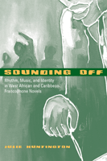

<body bgcolor="#FFFFFF" text="#000000" link="#0000FF" vlink="#CC0000" alink="#CC0000"><center><hr width="350" size="1" align="center" noshade>Examining the author�s use of sound in novels to construct and negotiate identity<hr width="350" size="1" align="center" noshade><p><a href="https://cdcshoppingcart.uchicago.edu/Cart/ChicagoBook.aspx?ISBN=9781439900314&&PRESS=temple" target="_top">Buy this book!</a> | <a href="https://cdcshoppingcart.uchicago.edu/Cart/Cart.aspx?PRESS=temple" target="_top">View Cart</a> | <a href="https://cdcshoppingcart.uchicago.edu/Cart/Cart.aspx?PRESS=temple" target="_top">Check Out</a></p><p></p></center><!--none//--><h1>Sounding Off</h1>
<H2>Rhythm, Music, and Identity in West African and Caribbean Francophone Novels</H2>
<h3>Julie Huntington</h3>
<P>cloth 1-4399-0031-0 $50.50, Oct 09, <FONT COLOR=#990033>Available</FONT>
<BR> 256 pp
6x9
</P><BLOCKQUOTE><I>"Huntington�s emphasis on the interconnections of the related arts�music, poetry, fiction, oral tradition etc.�is one of the few to treat systematically, and in a sound, sophisticated theoretical and ethnographic framework, the important traits of African literary, oral and musical productions. </i>Sounding Off<i> will make a great contribution to the interdisciplinary study and thus provide a deeper understanding of musical and literary-artistic productions in African and diasporan communities." <BR><B>&#151Daniel Avorgbedor</B>, Ohio State University, Columbus</I></BLOCKQUOTE>
<p>Intrigued by "texted" sonorities&#151the rhythms, musics, ordinary noises, and sounds of language in narratives&#151Julie Huntington examines the soundscapes in contemporary Francophone novels. Through an ethnomusicological perspective, Huntington argues that the range of sounds�from footsteps, heartbeats, and drumbeats�represented in West African and Caribbean works provides a context in which identities are shaped and negotiated.</p>
<p><i>Sounding Off</i> attends to how sounds function in such as Ousmane Sembene's <i>God's Bits of Wood</i> (Senegal), and Patrick Chamoiseau's <i>Solibo Magnificent</i> (Martinique). These writers&#151like composers&#151create distinct soundscapes, constructing transpoetic and transcultural links that resonate. The voices, cadences, and sonorities in these narratives create a rich soundtrack to the characters' lives, framing them with a rhythmic polyphony that helps form social and cultural identities. Huntington�s analysis shows how these writers and others challenge the aesthetic and political conventions that privilege written texts over orality and invite readers-listeners to participate in critical dialogues&#151to sound off, as it were, in local and global communities. </p>
<BR>&nbsp;<h2>Excerpt</h2><P>Excerpt available at <a href="http://www.temple.edu/tempress">www.temple.edu/tempress</a></p>
<BR>&nbsp;<h2>Reviews</h2>
<P><i>"Huntington finds new ways to read often-compared West African and Caribbean Francophone novels and offers fascinating insights into language and culture. Her concept of �instrumentaliture,� along with her referencing of African scholars, discussion of drum language, funerals, and </i>veill�es<i>, is original. </i>Sounding Off<i> will appeal to scholars of African, Caribbean, Diaspora, and comparative literature, and popular culture."</I> <BR><B>&#151Ren�e Larrier</B>, Rutgers University
<p><i>"Particularly impressive is a lengthy discussion in which she introduces the reader to the role of music, rhythm, and other sounding phenomena in West African life....[T]he study is valuable in establishing, or reestablishing, the element of music and rhythm as part of the vital context for Francophone African and Caribbean literary works. Summing Up: Recommended" </i>
<br>&#151<b><i>CHOICE</i></b>
<p><i>"[Huntington] revisits the subject of orality and identity in her study of West African and Caribbean francophone novels.... At times, </i>Sounding Off<i> reads like a travel book, as we follow her to a small village in West Africa where she is welcomed and sensitized to the importance of rhythm to everyday life....</i>Sounding Off<i> is at its best when it opens up new critical terrain with the concept of instrumentaliture."</i>
<br>&#151<b><i>Research in African Literatures</i></b>
<BR>&nbsp;<P><p>&nbsp;&nbsp;<font color="#3152A5">Also available in e-book</font></p></P><BR>&nbsp;<br>
<h2>Contents</h2><P>
<p>Acknowledgments
<br>Introduction
<p><b>1. Rhythm and Transcultural Poetics</b>
<br><i>Rhythm and Transculture</i>
<br><i>Method</i>
<p><b>2. Rhythm and Reappropriation in God�s <i>Bits of Wood</i> and <i>The Suns of Independence</i></b>
<br><i>Language and the Language of Music</i>
<br><i>Rhythm and Reappropriation in the Novel</i>
<br><i>Instrumentaliture at Work</i>
<br><i>Rhythm and Transformation</i>
<br><i>Ordinary and Extraordinary Rhythms</i>
<p><b>3. Rhythm, Music, and Identity in <i>L�appel des ar�nes</i> and <i>Ti Jean L�horizon</i></b>
<br><i>Rhythm, Music, Subjectivity, and the Novel</i>
<br><i>Rhythm and Identity in </i>L�appel des ar�nes
<br><i>Rhythm and Identity in </i>Ti Jean L�horizon
<br><i>Rethinking Rootedness</i>
<p><b>4. Music and Mourning in <i>Crossing the Mangrove</i> and <i>Solibo Magnificent</i></b>
<br><i>Memory, Mourning, and Mosaic Identities</i>
<br><i>Rhythm, Music, and Identity as Process</i>
<br><i>The Sounds of Death and Mourning</i>
<br><i>Configuring Rhythmic and Musically Mediated Identities</i>
<p>Concluding Remarks
<br>Works Cited
<br>Index
</P><BR>&nbsp;<H2>About the Author(s)</H2>
<table><tr><td valign="top"><img src="/tempress/authors/2035_au1.gif" height="90" width="75"></td><td width="100%" valign="middle"><p><b>Julie Huntington</b> is an Assistant Professor of French at Marymount Manhattan College</P></td></tr></table>
<BR><H2>Subject Categories</H2>
<p><A HREF="/tempress/literature.html" TARGET="_top">Literature and Drama</a>
<BR><A HREF="/tempress/music.html" TARGET="_top">Music and Dance</a>
<BR><A HREF="/tempress/african_studies.html" TARGET="_top">African Studies</a>
</p>
<BR><h2 class="inpageheading">In the series</H2>
<P><I><a href="http://www.temple.edu/tempress/african_soundscapes.html" onMouseOver="window.status='Click for other books in this series!'; return true;" onMouseOut="window.status=''; return true;" target="_top">African Soundscapes</a></i>, edited by Gregory Barz.
</p><p>African music has been a topic of considerable scholarly and general interest. The books in this new interdisciplinary series will highlight contemporary African music in its cultural contexts and the contributions of African expressive culture to global music traditions. The series will include works by scholars based in Africa.</p>
<p align="center"><a href="https://cdcshoppingcart.uchicago.edu/Cart/ChicagoBook.aspx?ISBN=9781439900314&&PRESS=temple" target="_top">Buy this book!</a> | <a href="https://cdcshoppingcart.uchicago.edu/Cart/Cart.aspx?PRESS=temple" target="_top">View Cart</a> | <a href="https://cdcshoppingcart.uchicago.edu/Cart/Cart.aspx?PRESS=temple" target="_top">Check Out</a></p><p><font face="Arial" size="1"><a href="copyright.html" onMouseOver="window.status='Web Copyright Policy';return true;" onMouseOut="window.status=''" title="Web Copyright Policy">&copy;</a> 2015 <a href="http://www.temple.edu" target="new" onMouseOver="window.status='Link to Temple University home page';return true;" onMouseOut="window.status=''" title="Link to Temple University home page">Temple University</a>. All Rights Reserved. http://www.temple.edu/tempress/titles/2035_reg.html</font></p>